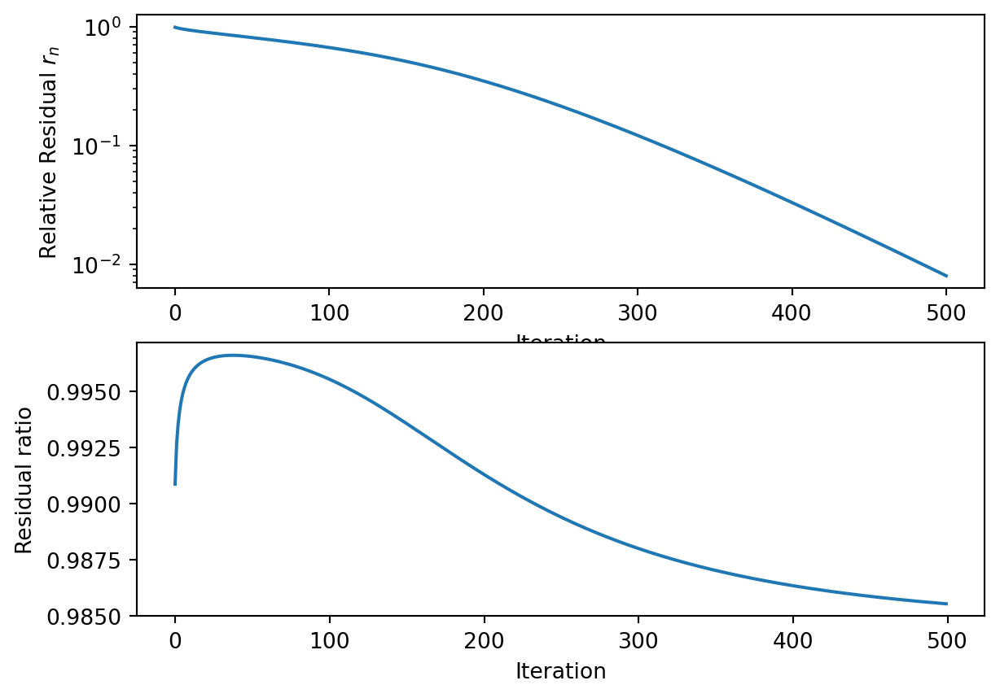

4 Runge-Kutta solver applied to the test problem
We now have to solve the ODE \(u' = b - Nu\) where \(M\) depends on the problem parameters \(b\) and \(\Delta x = 1 / (n+1)\), where \(n\) is the chosen number of subdivisions of \([0,1]\). Since we are only interested on the asymptotic behavior of \(u\), we only need to care about the stability of the numerical solver we wish to use. We consider the following RK scheme with two stages.
blablbal
This solver has two parameters \(\Delta t\) and \(\alpha\). The objective is for the solver to converge to a steady state solution as fast as possible. Set \(u_0 = u(0) = e\) as an initial value. We define the relative residual after \(k\) steps as
\[ r_k = ||Nu_k - b||/ ||b||. \]
where \(||.||\) is the 2-norm.
If the solver we chose is stable, then \(||r_k|| \to 0\) as \(k \to \infty\). We define now the convergence at step \(n\) to be the ratio of residual at step \(k\) and \(k-1\). That is
\[ c_k = \frac{||r_k||}{||r_{k-1}||} = \frac{||Mu_k - e||}{||Mu_{k-1}-e||} \]
where \(||.||\) is the 2-norm.
4.1 A small experiment.
We are interested in finding the best parameters \((\Delta t, \alpha)\) to use for some specific problem parameters \((b, n)\). Since the residual ratio vary quite a bit depending on the number of iteration, we decide to investigate the residual ratio after 10 iterations and 100 iterations. So, for the problem parameters \(b = 0.05\), and \(n = 100\), we plot \(c_{10 }= f(\Delta t, \alpha)\) and \(c_{100} = g(\Delta t, \alpha)\). We wish to answer the following questions
- Where are the optimal parameters for this specific problem, that is, the ones that minimize \(c_{10}\) and \(c_{100}\), and do they also depend on the iteration number or not.
- What do these functions look like. In particular, we may be interested in the function convexity.
In both cases, we use a contour plot. In ?fig-resRatio10 and ?fig-resRatio100, the residual ratio is clipped when it is \(\geq 1\) so as to maximize contrast.
The stability region after 100 iterations is more narrow, suggesting that convergence may not hold even if it seems to hold for the first few iterations. Nevertheless, we can see how the parameters act on the function.
This is of course an exploration of particular problem parameters, and it is not advisable in practice to compute the optimal parameters with a grid search. We thus explore a possible solution to this problem by using a reinforcement learning algorithm to “learn” these optimal parameters.